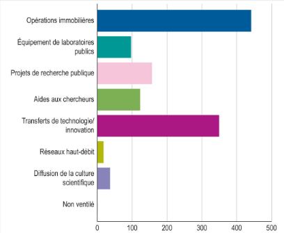

Cartographie des activités de la recherche à l'université de Toulouse
Découvrez les unités de recherche et explorez leurs compétences scientifiques.
Universite Toulouse Paul Sabatier

La cartographie des activités de recherche offre une vue d'ensemble des unités de recherche et de leurs compétences scientifiques. Explorez les différentes expertises disponibles et découvrez les opportunités de collaboration au sein de notre institution.
La recherche d'une compétence technique est un impératif stratégique. Cette démarche permet d'identifier et d'adopter des outils innovants qui optimisent la performance et favorisent l'innovation au sein des unités de recherche.